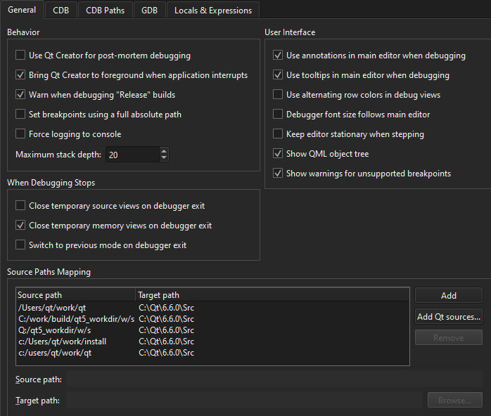

Debug crashed processes on Windows
You can launch the debugger in the post-mortem debugger operating mode if an application crashes on Windows. Select Debug in Qt Creator in the error message from the Windows operating system.
You can use the post-mortem debugger only on Windows, and you must first install the debugging tools for Windows.
To register Qt Creator as a post-mortem debugger, go to Preferences > Debugger > General, and then select Use Qt Creator for post-mortem debugging.

See also How To: Debug, Debugging, Debuggers, and Debugger.